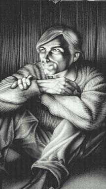

Ринальдо (Лукас Райнард/Люк )Сын предателя Бранда и королевы Ясры. Он подвергся малому ритуалу увеличения могущества в Замке Четырех Миров. Теперь король Кашпы. Символ - феникс, возрождающийся из пламени. Цвета одежды: зеленый. Близко знаком с Дворами Хаоса, так как его мать была завербована из близлежащей тени Дарой. Психологически - почти хамелеон. Люк обладает способностью почти мгновенно сменять роль. По профессии калифорнийский торговец, он без усилия переметнется в свою Амберскую личину, когда того потребуют обстоятельства. Как и Мерлин, которого он, наверное, больше всего напоминает, он сохраняет свой земной облик, когда путешествует по отражениям, и это приносит ему кучу ненужных сложностей. Ему нравится Мерлин, и временами он становится на его сторону, но так же часто он оказывается на противоположном полюсе. Это создало стойкую, осознанную вражду между этими "внучатами" Янтаря. И породило явный страх среди жителей Амбера и Хаоса: если Люк и Мерлин когда-нибудь сольются в команду, то будут весьма опасной парой. |
 |